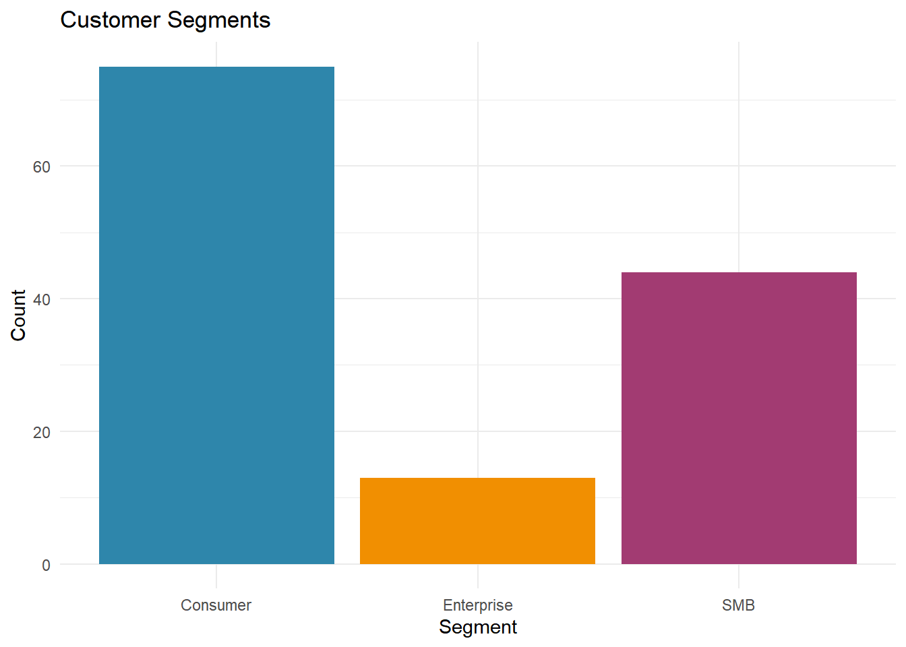
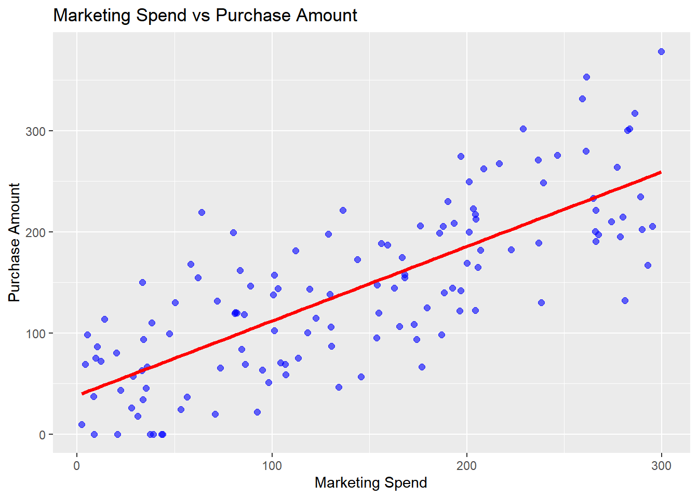

tibble [132 × 9] (S3: tbl_df/tbl/data.frame)
$ customer_id : chr [1:132] "36616168_c0001" "36616168_c0002" "36616168_c0003" "36616168_c0004" ...
$ signup_date : chr [1:132] "2024-12-20" "2025-01-07" "18/05/2025" "May 31, 2025" ...
$ marketing_spend: num [1:132] 81.3 101.2 179.6 236.6 71.9 ...
$ visits : num [1:132] 3 3 6 10 2 2 12 5 5 5 ...
$ purchase_amount: num [1:132] 120 157 125 271 132 ...
$ segment : chr [1:132] "Consumer" "Consumer" "SMB" "Enterprise" ...
$ notes : chr [1:132] "no response" NA NA NA ...
$ marketingspend : num [1:132] 81.3 101.2 179.6 236.6 71.9 ...
$ purchaseamount : num [1:132] 120 157 125 271 132 ...Marketing Spend Analysis - Does More Marekting Spend equal More Purchases?
INTRODUCTION
This dataset shows how marketing spend affects customer purchases across different segments. The research tests if higher marketing spend leads to higher purchase amounts. By understanding this, we can make better marketing decisions which would then lead to boosted sales. For this analysis, I have used a clean customer campaign data.
MY RESEARCH QUESTION
Does higher marketing spend per customer lead to higher purchase amounts? My analysis compares the relationship using data visualizations. My goal here is to see if the campaign was effective.
DATA INTRODUCTION
The dataset contains customer ID, signup date, marketing spend, visits, purchase amount, segment, and notes for each customer. This data shows how marketing investments impact purchases. Cleaning converted spend and purchase columns to numbers and removed missing values. No duplicate customers were found.
DATASET DESCRIPTION
This dataset contains 132 observations (rows) and 9 variables (columns). Each row represents one customer from the marketing campaign.
The dataset has 7 variables total. The first 3 columns (customerid, marketingspend, purchaseamount) contain numbers that we use for our main analysis. The other 4 columns (signupdate, visits, segment, notes) contain text information about each customer.
| Variable | Mean | Median |
|---|---|---|
| Marketing Spend | 142.4252 | 140.06 |
| Purchase Amount | 143.1444 | 139.06 |
Table 1 shows the mean and median values for marketing spend and purchase amount.
The mean is higher than median, which means a few customers had very high spend/purchase values that pulled the averages up, causing a skew in the data distribution.

Figure 1 shows customer distribution by segment.
Here we can clearly see that most of our customers are consumers, followed my Small and Medium Businesses (SMB) who are then followed by Enterprises. This tells us our marketing campaign targeted mostly individual consumers rather than businesses.

Figure 2 shows the relationship between marketing spend and purchase amount.
We clearly see an increasing trend with the help of the trend line, which means higher marketing spend leads to higher customer purchases (positive correlation)
RESULTS
Table 1 shows companies spent about $142 per customer on marketing (median $140), while customers bought around $143 worth of products on average (median $139). The revenue almost roughly equals the marketing cost here which suggests that there is a net profit (before company costs)
Figure 1 shows most customers are direct “Consumer” type (not businesses).
Figure 2 shows a line going upwards. This means: more marketing money = more customer purchases.
Conclusion: Higher marketing spend does lead to higher sales